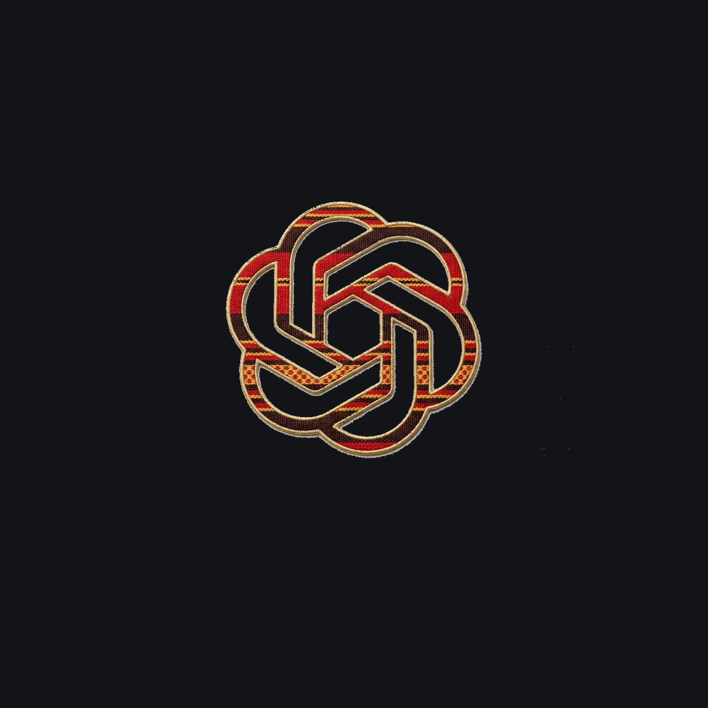

GENERATIVE AI • LOW-RESOURCE NLP • FULL-STACK
taAI: Wolaytta AI & Multilingual Translator
A specialized generative AI conversational system and bidirectional translation engine designed to bridge digital linguistic gaps for the Wolaytta language.

1. The Problem: Low-Resource Language Isolation
The Wolaytta language (Omotic branch of Afroasiatic) is spoken by millions of people across Southern Ethiopia. Despite its cultural richness, Wolaytta remains significantly underserved in modern artificial intelligence platforms, search engines, and automated translation tools.
Major commercial LLMs frequently hallucinate or produce non-idiomatic output when queried in Wolaytta due to scarce training data in standard web crawls. Without specialized prompt engineering, terminology grounding, and structured lexicographical datasets, native speakers and language learners cannot reliably leverage modern AI technologies.
2. System Architecture & Modular Pipeline
taAI was engineered with a modular backend structured via Flask Blueprints to cleanly separate concerns across authentication, AI inference, translation, and dictionary indexing:
High-Level System Flow:
Client SPA (Vite) → Flask API Gateway → Rate Limiter & Auth Guard → Gemini AI / Dictionary Services → Supabase Cache & History
Key architectural components include:
- Modular Blueprints: Organized into distinct route modules:
chat_routes.pyfor streaming conversations,translate_routes.pyfor bidirectional cross-language transformations,dict_routes.pyfor structured vocabulary searches, andauth_routes.pyfor session handling. - AI Grounding & Prompt Orchestration: Custom system instructions injected into Google Gemini instances to constrain responses to natural, grammatically correct Wolaytta idioms and prevent cross-language hallucination.
- Bidirectional Translation Pipeline: Direct semantic translation endpoints linking:
- English ↔ Wolaytta
- Amharic ↔ Wolaytta
- Lexicographical Offline Dictionary: A fast lookup service that checks verified vocabulary pairs before falling back to generative inference, preserving accuracy for technical and traditional terms.
- Security & Rate Control: Built-in IP rate limiting and session tracking using Supabase PostgreSQL to prevent abuse while ensuring high availability.
3. Technical Challenges & Solutions
Challenge A: Context Retention & Low-Resource Accuracy
General LLM models often shift into Amharic or English when conversing in Wolaytta due to tokenizer biases towards high-resource scripts.
Solution:
Designed a multi-stage prompt synthesis layer in prompts.py. The orchestrator injects strict linguistic constraints, phonetic markers, and localized cultural context into each message payload, ensuring the model maintains grammatical consistency throughout multi-turn dialogues.
Challenge B: Low-Latency Hybrid Lookups
Users querying common words needed instantaneous dictionary definitions without waiting for full generative LLM processing overhead.
Solution:
Implemented a dual-layer resolution engine: requests are first routed through an indexed dictionary service. If an exact or fuzzy match exists, the definition and examples return within 15ms. Generative AI is dynamically invoked only for complex sentences, idiom synthesis, or natural conversation.
4. Impact & Community Value
taAI represents a milestone in digital inclusion for Southern Ethiopia. By creating a dedicated portal accessible both via desktop and mobile browsers, the platform allows students, researchers, and native speakers to:
- Communicate with modern generative AI in their native language.
- Translate academic, governmental, and personal texts across English, Amharic, and Wolaytta.
- Preserve linguistic heritage and expand digital documentation for future generations.